La conmutación es el proceso por el cual se pone en comunicación un usuario con otro, a través de una infraestructura de comunicaciones común, para la transferencia de información.
La conmutación consiste en el establecimiento de un sistema de comunicación entre dos puntos, un emisor (Tx) y un receptor (Rx) a través de equipos o nodos de transmisión, es decir, que con el proceso de conmutación podemos hacer entrega de una señal desde un puerto origen hacia un puerto destino.
La conmutación es un proceso que funciona en la capa 2 del modelo OSI (Enlace de Datos).
Los tres servicios fundamentales que emplean técnicas de conmutación son el telefónico, el telegráfico y el de datos, pudiendo utilizar una de las tres técnicas de conmutación actuales: de circuitos, de mensajes y de paquetes.
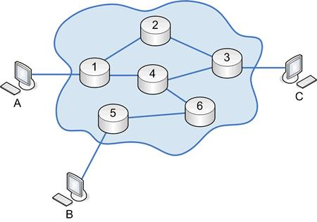La técnica de conmutación de circuitos, que puede ser espacial o temporal, consiste en el establecimiento de un circuito físico previo al envío de información, que se mantiene abierto durante todo el tiempo que dura la misma. El camino físico se elige entre los disponibles, empleando diversas técnicas de señalización -"por canal asociado" si viaja en el mismo canal o "por canal común" si lo hace por otro distinto-, encargadas de establecer, mantener y liberar dicho circuito, vistas anteriormente. Un ejemplo de red de este tipo, es la red telefónica conmutada.
La Red Telefónica Conmutada (RTC; también llamada Red Telefónica Básica Conmutada o RTBC) es una red de comunicación diseñada primordialmente para transmisión de voz, aunque pueda también transportar datos, por ejemplo, en el caso del fax o de la conexión a Internet a través de un módem acústico.
Se trata de la red telefónica clásica, en la que los terminales telefónicos (teléfonos) se comunican con una central de conmutación a través de un solo canal compartido por la señal del micrófono y del auricular. En el caso de transmisión de datos hay una sola señal en el cable en un momento dado compuesta por la de subida más la de bajada, por lo que se hacen necesarios supresores de eco.
La voz va en banda base, es decir sin modulación (la señal producida por el micrófono se pone directamente en el cable).
Las señales de control (descolgar, marcar y colgar) se realizaban, desde los principios de la telefonía automática, mediante aperturas y cierre del bucle de abonado. En la actualidad, las operaciones de marcado ya no se realizan por apertura y cierre del bucle, sino mediante tonos que se envían por el terminal telefónico a la central a través del mismo par de cable que la conversación.
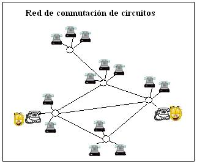CONMUTACION DE PAQUETES:
Un Paquete es un grupo de información que consta de dos partes: los datos propiamente dichos y la información de control, en la que está especificado la ruta a seguir a lo largo de la red hasta el destino del paquete. Mil octetos es el límite de longitud superior de los paquetes, y si la longitud es mayor el mensaje se fragmenta en otros paquetes.
Esta técnica es parecida a la anterior, sólo que emplea mensajes más cortos y de longitud fija (paquetes), lo que permite el envío de los mismos sin necesidad de recibir el mensaje completo que, previamente, se ha troceado. Cada uno de estos paquetes contiene información suficiente sobre la dirección, tanto de partida como de destino, así como para el control del mismo en caso de que suceda alguna anomalía en la red. El mejor ejemplo actual de red que hace uso de esta técnica es Internet, que hace uso del protocolo IP. Otros ejemplos son las redes X.25 y Frame Realy.
Los paquetes permanecen muy poco tiempo en memoria, por lo que resulta muy rápida, permitiendo aplicaciones de tipo conversacional, como son las de consulta. La conmutación de paquetes admite dos variantes distintas, según el modo de funcionamiento: modo Datagrama y Circuito Virtual.
La conmutación de paquetes se trata del procedimiento mediante el cual, cuando un nodo quiere enviar información a otro lo divide en paquetes, los cuales contienen la dirección del nodo destino. En cada nodo intermedio por el que pasa el paquete se detiene el tiempo necesario para procesarlo. Cada nodo intermedio realiza las siguientes funciones:
• Almacenamiento y retransmisión (store and forward): hace referencia al proceso de establecer un camino lógico de forma indirecta haciendo "saltar" la información de origen al destino a través de los nodos intermedios
• Control de ruta (routing): hace referencia a la selección de un nodo del camino por el que deben retransmitirse los paquetes para hacerlos llegar a su destino.
Los paquetes, en fin, toman diversas vías, pero nadie puede garantizar que todos los paquetes vayan a llegar en algún momento determinado.
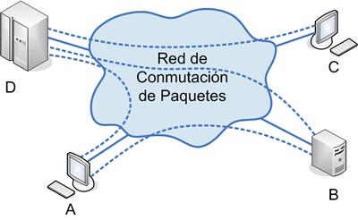CONMUTACION DE MENSAJES:
La conmutación de mensajes es un método basado en el tratamiento de bloques de información, dotados de una dirección de origen y otra de destino, por lo que pueden ser tratados por los centros de conmutación de la red que los almacenan -hasta verificar que han llegado correctamente a su destino- y proceden a su retransmisión. Es una técnica empleada con el servicio télex y en algunas de las aplicaciones de correo electrónico.
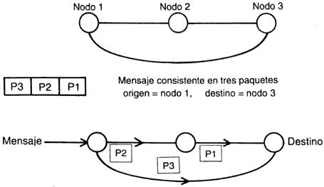CONMUTACION DE CELDAS:
En los servicios de conmutación de celdas, la unidad mínima de datos conmutados es una "celda" de tamaño fijo, es vez de un paquete de longitud variable. La tecnología basada en celdas permite que la conmutación sea realizada en hardware sin la complejidad y el consumo de tiempo de cálculo frame por frame. Esto hace que la conmutación por medio de celdas más rápida y barata. Los servicios más conocidos son los siguientes:
ATM (Asynchronous Tranfer Mode): ATM es un método de transmisión de celdas de tamaño fijo (15% bytes) utilizada en redes de banda ancha. ATM puede transferir datos a tasas desde 25 Mbps hasta 622 Mbps y tiene el potencial de transferir datos a velocidades de datos medidas en Gigabits por segundo. Muchos proveedores de servicios ofrecen servicios ATM, pero la gran mayoría lo tienen planeado para un futuro muy cercano ya que su implementación es muy cara.
SMDS (Switched Multimegabit Data Service): Como ATM, SMDS es otro servicio basado en celdas de longitud fija proveído por algunos carriers en Estados Unidos pero que no está disponible en México. SMDS usa conmutación de celdas y provee servicios tales como tarificación basada en uso y administración de red. El rango de las velocidades de transmisión va desde 1 Mbps hasta los 34 Mbps con una conectividad de muchos a muchos.
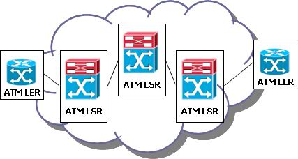Es el acrónimo de Plain Old Telephone Service (Servicio telefónico Ordinario Antiguo), conocido también como Servicio Telefónico Tradicional o Telefonía Básica), que se refiere a la manera en cómo se ofrece el servicio telefónico analógico (o convencional) por medio de cableado de cobre. En castellano, se denomina RTB
Este servicio es conocido como viejo o tradicional debido a que es el usado desde la invención del teléfono, ya que en las últimas décadas la introducción de medios electrónicos y computacionales ha supuesto la creación de la telefonía digital.
El servicio telefónico es aquel que permite a distintos usuarios establecer comunicaciones de voz a través de un terminal adecuado.
Servicio telefónico se apoya en una red de conmutación de circuitos de bajo retardo extremo a extremo, formada por:
• Terminales telefónicos
• Enlaces telefónicos
• Centrales de conmutación telefónica.
Algunos conceptos:
• La red telefónica pública (POTS): Es el conjunto de elementos que hacen posible la transmisión conmutada de voz, con acceso generalizado al público, tanto en Colombia como en el exterior.
• Separación contable: Es la presentación de la información económica y financiera de un operador de TPBC de manera separada para cada servicio prestado, sin perjuicio de las disposiciones legales y las establecidas por el Contador General de la Nación y la SSPD.
• Servicio de Telefonía Pública Básica Conmutada "TPBC": Es el servicio básico de Telecomunicaciones cuyo objeto es la transmisión conmutada de voz o a través de la RTPC con acceso generalizado al público.
• servicio de Telefonía Pública Básica Conmutada de Larga Distancia "TPBCLD": Es el servicio de TPBC que proporciona en sí mismo capacidad completa de comunicación telefónica entre usuarios de distintas redes de TPBCL, TPBCLE y TMR del País, o entre un usuario de la RTPC en Colombia y un usuario situado en un país extranjero. Este servicio comprende los servicios de TPBCLDN y TPBCLDI.
• Servicio de Telefonía Básica Pública Conmutada de Larga Distancia Nacional o Servicio de Telefonía Pública Básica Conmutada de Larga Distancia Nacional "TPBCLDN": Es el servicio de TPBC que proporciona en sí mismo capacidad completa de comunicación telefónica entre usuarios de distintas redes de TPBC local y/o local extendida del País.
• Servicio de Telefonía Pública Básica Conmutada de Larga Distancia Internacional
• "TPBCLDI": Es el servicio de TPBC que proporciona en sí mismo capacidad completa de comunicación telefónica entre un usuario de la RTPC en Colombia y un usuario situado en un país extranjero.
• Servicio de Telefonía pública Básica Conmutada Local "TPBCL": Es el servicio de TPBC uno de cuyos objetos es la transmisión conmutada de voz a través de la Red Telefónica Conmutada con acceso generalizado al público, en un mismo municipio.
• Servicio de Telefonía Básica Pública Conmutada Local Extendida o Servicio de Telefonía
• Pública Básica Conmutada Local Extendida "TPBCLE": Es el servicio de TPBC prestado por un mismo operador a usuarios de un área geográfica continúa conformada por municipios adyacentes, siempre y cuando ésta no supere el ámbito de un mismo Departamento.
• Servicio de Telefonía Pública Básica Conmutada Local Móvil Rural (TMR): Es la actividad complementaria del servicio de TPBCL que permite la comunicación a usuarios ubicados fuera de la cabecera municipal, o en un municipio con población total menor a 7,000 habitantes.
• Servicio portador: Es aquel que proporciona la capacidad necesaria para la transmisión de señales entre dos o más puntos definidos de la red de telecomunicaciones.
• Servicio universal: Se entiende por Servicio Universal aquel que pretende llevar el acceso generalizado a los hogares de los servicios básicos de telecomunicaciones.
• Servicios adicionales: Son todos aquellos servicios que atienden necesidades específicas relacionadas con la actividad de interconexión, los cuales pueden contratarse por separado.
• Servicios semiautomáticos y especiales: Son todos aquellos servicios de que trata el artículo 29 contenido en el Decreto 25 del 2002 o las normas que los sustituyan.
• Servicios suplementarios: Son aquellos servicios suministrados por una red de TPBC, además de su servicio o servicios básicos
• Servidumbre de acceso, uso e interconexión: Es el acto administrativo mediante el cual la CRT impone los derechos y obligaciones a los operadores solicitante e interconectarte y prevé las condiciones de carácter técnico, comercial, operativo y económico del acceso, uso e interconexión de las redes.
• Sistema de Medición del Consumo: Es el conjunto de definiciones, principios, reglas, procedimientos y funciones de la empresa, organizado en tres procesos básicos a saber: tasación, tarificación y facturación.
• Sistema de multiacceso: Es el mecanismo de acceso de los usuarios a los operadores de TPBCLD en virtud del cual el usuario escoge uno de los operadores marcando un prefijo que lo identifica, para que le curse cada llamada.
• Sitio de Interconexión: Áreas relacionadas directamente con el punto de interconexión.
• SSPD: Superintendencia de Servicios Públicos Domiciliarios.
• Suscriptor: Es la persona natural o jurídica con la cual un operador ha celebrado un contrato de condiciones uniformes de servicios públicos.
• Tarjeta Prepago: Es cualquier medio impreso o electrónico, que mediante el uso de claves de acceso u otros sistemas de identificación, permite a un usuario acceder a una capacidad predeterminada de servicios de telecomunicaciones que ha adquirido en forma anticipada.
• Tasa Contable: Es un valor acordado entre un operador de TPBCLDI y un interconectante internacional, con el fin de distribuir los ingresos recibidos por las llamadas internacionales cursadas entre ellos, en concordancia con el reglamento de la UIT.
• Tasa de retorno razonable o utilidad razonable: Es la que permite remunerar el patrimonio de los accionistas en la misma forma en que lo habría remunerado una actividad eficiente en un sector de riesgo comparable, la cual será estimada por el departamento nacional de planeación.
• Teléfono público: Aparato telefónico de acceso generalizado al público, conectado a la RTPC, por medio del cual se prestan servicios de telecomunicaciones.
• Tráfico internacional entrante: Es el tráfico constituido por las llamadas de larga distancia internacional completadas, efectuadas a través de marcación directa o con asistencia de operadora, destinadas a usuarios ubicados en el territorio colombiano y facturadas por el operador extranjero.
• Tráfico internacional saliente: Es el tráfico constituido por las llamadas de larga distancia internacional completadas, efectuadas a través de marcación directa o con asistencia de operadora, originadas por suscriptores ubicados en el territorio colombiano, destinadas a usuarios ubicados en el extranjero y facturadas por el operador al suscriptor que origina la llamada.
• TMC: Telefonía Móvil Celular
• UIT: Unión Internacional de Telecomunicaciones.
Es un estándar ITU-T para redes de área amplia de conmutación de paquetes. Su protocolo de enlace, LAPB, está basado en el protocolo HDLC (publicado por ISO, y el cual a su vez es una evolución del protocolo SDLC de IBM). Establece mecanismos de direccionamiento entre usuarios, negociación de características de comunicación, técnicas de recuperación de errores.
La norma X.25 es el estándar para redes de paquetes recomendado por CCITT, el cual emitió el primer borrador en 1974. Este original sería revisado en 1976, en 1978 y en 1980, y de nuevo en 1984, para dar lugar al texto definitivo publicado en 1985.
El documento inicial incluía una serie de propuestas sugeridas por Datapac, Telenet y Tymnet, tres nuevas redes de conmutación de paquetes. La X.25 se define como la interfaz entre equipos terminales de datos y equipos de terminación del circuito de datos para terminales que trabajan en modo paquete sobre redes de datos públicas. Las redes utilizan la norma X.25 para establecer los procedimientos mediante los cuales dos ETD que trabajan en modo paquete se comunican a través de la red.
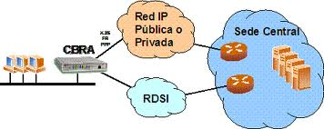Este estándar pretende proporcionar procedimientos comunes de establecimiento de sesión e intercambio de datos entre un ETD y una red de paquetes (ETCD). Entre estos procedimientos se encuentran funciones como las siguientes: identificación de paquetes procedentes de computadoras y terminales concretos, asentimiento de paquetes, rechazo de paquetes, recuperación de errores y control de flujo.
Además, X.25 proporciona algunas facilidades muy útiles, como por ejemplo en la facturación a estaciones ETD distintas de la que genera el tráfico. Dentro de la perspectiva de X.25, una red opera en gran parte como un sistema telefónico
Una red X.25 se asume como si estuviera formada por complejos conmutadores de paquetes que tienen la capacidad necesaria para el enrutamiento de paquetes.
OSI ha sido la base para la implementación de varios protocolos. Entre los protocolos comúnmente asociados con el modelo OSI, el conjunto de protocolos conocido como X.25 es probablemente el mejor conocido y el más ampliamente utilizado. X.25 fue establecido como una recomendación de la ITU-TS (Telecommunications Section de la International Telecommunications Union), una organización internacional que recomienda estándares para los servicios telefónicos internacionales. X.25 ha sido adoptado para las redes públicas de datos y es especialmente popular en Europa.X.25 es un protocolo que se base en las primeras 3 capas del modelo OSI.
La recomendación X.25 para el nivel de paquetes coincide con una de las recomendaciones del tercer nivel OSI. X.25 abarca el tercer nivel y también los dos niveles más bajos. La interfaz de nivel físico recomendado entre el ETD y el ETCD es el X.21. X.25 asume que el nivel físico X.21 mantiene activados los circuitos T(transmisión) y R(recepción) durante el intercambio de paquetes. Asume también, que el X.21 se encuentra en estado 13S (enviar datos), 13R (recibir datos) o 13(transferencia de datos).
Supone también que los canales C(control) e I(indicación) de X.21 están activados. Por todo esto X.25 utiliza la interfaz X.21 que une el ETD y el ETCD como un "conducto de paquetes", en el cual los paquetes fluyen por las líneas de transmisión(T) y de recepción(R). El nivel físico de X.25 no desempeña funciones de control significativas. Se trata más bien de un conducto pasivo, de cuyo control se encargan los niveles de enlace y de red.
En X.25 se supone que el nivel de enlace es LAPB. Este protocolo de línea es un conjunto de HDLC. LAPB y X.25 interactúan de la siguiente forma: En la trama LAPB, el paquete X.25 se transporta dentro del campo I(información). Es LAPB el que se encarga de que lleguen correctamente los paquetes X.25 que se transmiten a través de un canal susceptible de errores, desde o hacia la interfaz ETD/ETCD. La diferencia entre paquete y trama es que los paquetes se crean en el nivel de red y se insertan dentro de una trama, la cual se crea en nivel de enlace. Para funcionar bajo el entorno X.25, LAPB utiliza información (I), Receptor Preparado (RR), Rechazo (REJ), Receptor No Preparado (RNR), Desconexión (DSC)
Activar Modo de Respuesta Asíncrono (SARM) y Activar Modo Asíncrono Equilibrado (SABM). Las respuestas utilizadas son las siguientes: Receptor Preparado (RR), Rechazo (REJ), Receptor No Preparado (RNR), Asentimiento No Numerado (UA), Rechazo de Trama (FRMR) y Desconectar Modo (DM)
El servicio de circuito virtual de X.25 ofrece dos tipos de circuitos virtuales: llamadas virtuales y circuitos virtuales permanentes. Una llamada virtual es un circuito virtual que se establece dinámicamente mediante una petición de llamada y una liberación de llamada como se describe más adelante. Un circuito virtual permanente es un circuito virtual fijo asignado en la red.
Es una técnica de comunicación mediante retransmisión de tramas para redes de circuito virtual, introducida por la ITU-T a partir de la recomendación I.122 de 1988. Consiste en una forma simplificada de tecnología de conmutación de paquetes que transmite una variedad de tamaños de tramas o marcos (“frames”) para datos, perfecto para la transmisión de grandes cantidades de datos.
Permite la transmisión de datos a altas velocidades basada en protocolos de conmutación de paquetes. En Frame Relay los datos son divididos en paquetes de largo variable los cuales incluyen información de direccionamiento. Los paquetes son entregados a la Red Frame Relay, la cual los transporta hasta su destino específico sobre una conexión virtual asignada.
ofrece ventajas significativas para interconectar MAINFRAMEs, habitualmente realizada por líneas arrendadas. Un computador central (Host) a menudo se comunica durante la noche con un sitio de apoyo, a través de largas ráfagas intermitentes de tráfico para las cuales una conexión permanente es desperdiciada, pero Frame Relay es la indicada.
Frame Relay proporciona conexiones entre usuarios a través de una red pública, del mismo modo que lo haría una red privada punto a punto, esto quiere decir que es orientado a la conexión.
Las conexiones pueden ser del tipo permanente, (PVC, Permanent Virtual Circuit) o conmutadas (SVC, Switched Virtual Circuit). Por ahora sólo se utiliza la permanente.
Es una técnica empeada en telecomunicaciones en la que la información se envía a una estación intermedia, donde se mantiene y se envía en un momento posterior a su destino final o a otra estación intermedia.
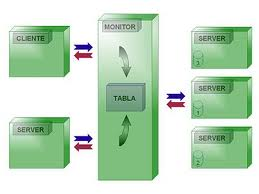La estación intermedia, o nodo en una red contexto, verifica la integridad del mensaje antes de enviarlo. En general, esta técnica se utiliza en redes con conectividad intermitente, especialmente en el desierto o entornos que requieren una alta movilidad. También puede ser preferible en situaciones en las que hay largos retrasos en la transmisión y las tasas de error variable y alta, o si una directa, de extremo a extremo de conexión no está disponible.
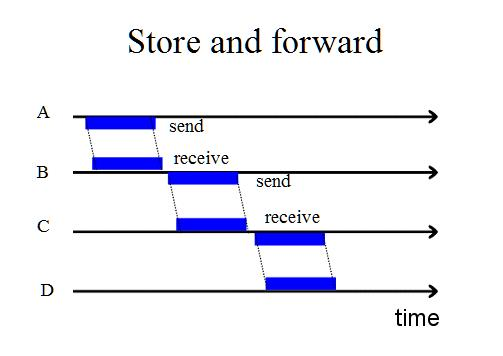Las redes Store and Forward precedieron al uso de las computadoras. El equipo de teletipo Punto-a-punto se utilizaba para enviar mensajes que se almacenaban en el extremo receptor en cinta de papel perforado en un centro de retransmisión. Un operador humano en el centro quitaba la cinta mensaje de la máquina receptora, leía la información de direccionamiento, y luego la enviaba hacia su destino, el correspondiente saliente de punto a punto de enlace teletipo.
Un teletipo, TTY (acrónimo actual por la lengua original), télex o radioteletipo es un dispositivo telegráfico de transmisión de datos, ya obsoleto, utilizado durante el Siglo XX para enviar y recibir mensajes mecanografiados punto a punto a través de un canal de comunicación simple, a menudo un par de cables de telégrafo.
El comportamiento de esta función en cada escenario se ilustra con una aplicación de muestra que usted puede implantar en el entorno de Process Server. Todas estas aplicaciones están en formato de Project Interchange (PI) para que se las pueda importar a Integration Developer y ejecutar en el entorno de prueba.
Función store-and-forward trabaja con importaciones que enlazan mensajes. Este escenario de negocios y esta aplicación de muestra se explican.
La compañía fabricante de computadoras, XYZ, cuenta con una unidad de montaje y una división de inventario. La división de inventario brinda información sobre la disponibilidad de los CPU. La unidad de montaje le consulta a la división de inventario sobre la disponibilidad de una cantidad específica de un CPU en particular. La división de inventario responde si la cantidad indicada de dicho CPU está o no disponible. Si dicha cantidad no está disponible, se responde con información sobre cuándo dicha cantidad estará disponible. La división de inventario acepta consultas a través del transporte WebSphere MQ. Los clientes tienen que enviar sus consultas a una cola especificada en WebSphere MQ y recuperar la respuesta en otro momento. Por lo tanto, el flujo de la consulta es una operación unidireccional.
Escenario store-and-forward se configura en una importación con enlaces de servicios web. Sin embargo, a la importación de servicio web se la llama de manera asíncrona. Esto desencadena el mensaje de guardado cuando el servicio web arroja errores de tiempo de ejecución (cuando no está disponible). El mensaje de guardado será la cola creada para la importación.
La compañía fabricante de computadoras, ABC, cuenta con una división de montaje, que requiere monitores de computadora para las tareas de ensamblado. La división de montaje se pone en contacto con un proveedor para comprar dichos monitores de computadora. Este proveedor ofrece un servicio web a través del que los clientes pueden realizar sus pedidos. El pedido incluye el número de producto de los monitores requeridos y la cantidad necesaria. La respuesta del servicio web consiste en indicar si se puede satisfacer dicho pedido de manera inmediata o no. En este último caso, el servicio se encarga de indicar cuándo volverá a haber stock disponible.
La función store-and-forward en importaciones con enlaces de mensajes y enlaces del servicio web. De manera similar, se puede configurar el calificador store-and-forward en una exportación SCA (aunque esto no es posible en otras exportaciones). Cuando se la configura en una exportación SCA, si la exportación llama un componente SCA de manera sincrónica y el componente arroja una excepción de tiempo de ejecución, la primera solicitud fallida generará un evento fallido y todas las solicitudes subsiguientes se guardarán en la cola de exportación SCA.
Las exportaciones de mensajería llaman a sus componentes correspondientes de manera asíncrona. Por lo tanto, cuando el calificador store-and-forward se configura en el componente y el componente experimenta errores de tiempo de ejecución, se desencadena el guardado y los mensajes se guardan en la cola del componente. Y Ambos servicios se ofrecen a través de servicios web. La compañía fabricante de computadoras primero tiene que verificar la disponibilidad del producto en la cantidad solicitada usando ComputerMonito VendorService.
El calificador store-and-forward se configura en un componente SCA, que llama dos servicios de manera sincrónica. Estos servicios son servicios web. Si alguno de estos servicios no está disponible, el componente recibe un error de tiempo de ejecución y genera un evento fallido. Todas las solicitudes subsiguientes se guardan en la cola del componente. Tenga en cuenta que, aunque sólo uno de los servicios no está disponible (mientras que el otro sí lo está), se guardan todas las solicitudes que se envían al componente.
Una compañía fabricante de computadoras requiere monitores de computadora para las tareas de ensamblado. Por ello, se pone en contacto con un proveedor que vende monitores de computadora. Este proveedor ofrece dos servicios que se ocupan del procesamiento de pedidos. El primer servicio es ComputerMonitorVendorService, que acepta pedidos y devuelve información sobre si el producto solicitado está disponible o no en la cantidad requerida. De estar disponible en la cantidad requerida, el proveedor permite el pago con tarjeta de crédito. PaymentGatewayService se ocupa de proveer el servicio de pago.
Es una tecnología utilizada en telecomunicaciones a unas desarrolladas para hacer frente a la demanda de capacidad de transmisión para servicios y aplicaciones. Sin embargo el ATM no se hizo popular más en 1988, cuando el CCITT decidió que será la tecnología de conmutación de las futuras redes ISDN en banda ancha.
A fin de aprovechar al máximo la capacidad de los sistemas de transmisión, sean estos de cable o radioeléctrico, la información no es transmitida y conmutada a través de Canals asignados en permanencia, sino en forma de cortos paquetes (celdas ATM) de longitud constante y que pueden ser enrrutadas individualmente mediante el uso de los denominados canales virtuales y trayectos virtuales.
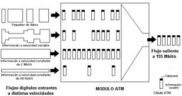Son estructuras de datos de 53 bytes compuestas por dos campos principales:
• Header.
• Payload.
El estándar define el protocolo orientado a conexión que las transmite y dos tipos de formatos de celdas.
el cual se refiere a la conexión de switches ATM en redes privadas.
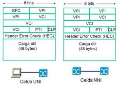se refiere a la conexión de un swuitch ATM de una empresa pública o privada con una terminal ATM de un usuario normal, siendo este el más utilizado.
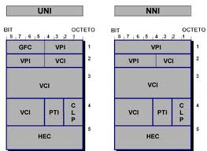• GFC (control de flujo genérico).
• UPI (identificador de ruta virtual)
• PT (tipo de información de usuario).
• CLP (prioridad).
• HEC (corrección de error de cabecera).
Es el modo de transferencia asíncrona fue la apuesta de la industria tradicional de las telecomunicaciones por las comunicaciones de banda ancha.
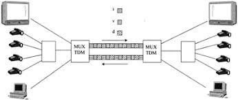